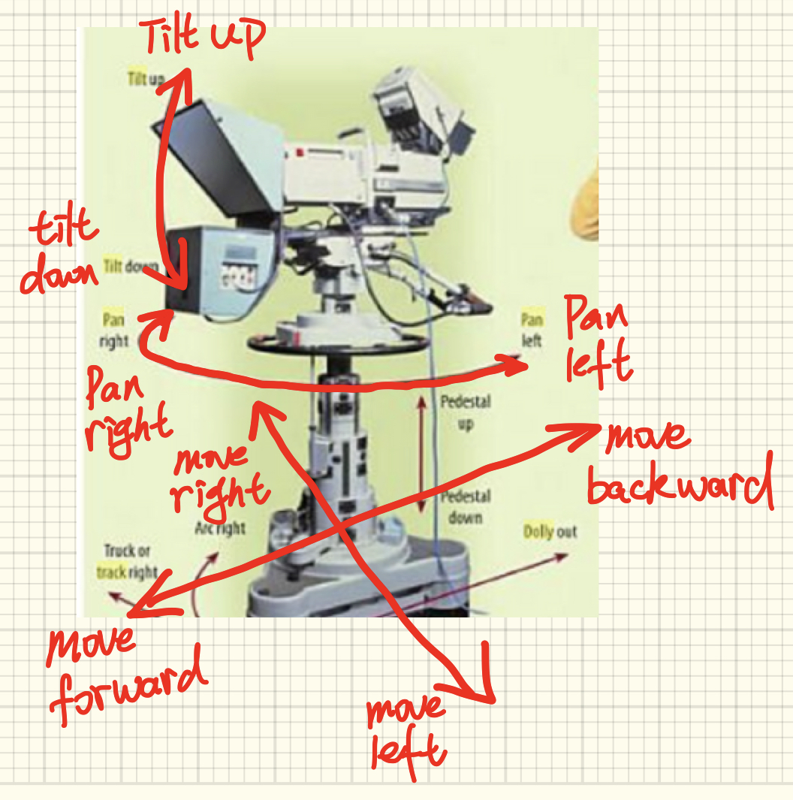
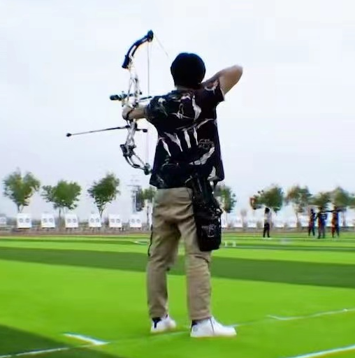
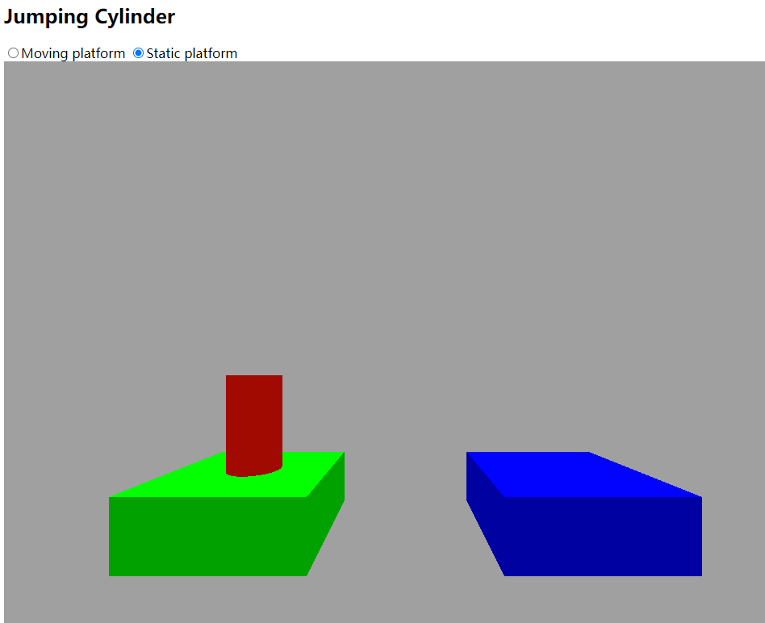
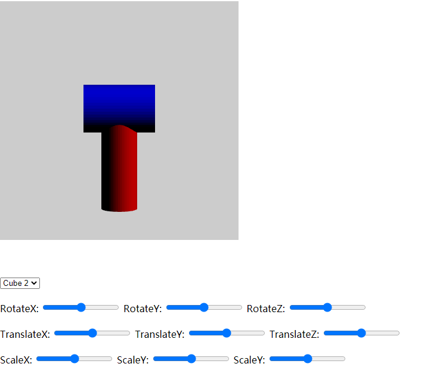

-

-
Ruiyang
-
Issued time： 2021-12-01
This is a 3D modeling tool. Developed by Ruiyang Liu and his group.
All operations are in top navigation bar->"help"->user manual.

In this project, user can control the Cylinder and make it to jump from one platform to the next platform.
In the 3D simulation scene, you can modify the position of objects in the center,
change the camera position, and modify lighting components.

You can create two objects in the scene, and change each position respectively.